Lecture 2: Image Classification with Linear Classifiers¶
参考：Stanford CS231n 10th Anniversary, Lecture 2, April 3, 2025
Image Classification¶
图像分类是计算机视觉的核心任务：给定一张图像和一组预定义的类别标签 \(\{dog, cat, truck, plane, \dots\}\)，系统需要为图像分配一个类别标签。
语义鸿沟 (Semantic Gap)¶
对人类来说，识别一只猫很简单，但对计算机来说，图像只是一个 \(H \times W \times C\) 的整数张量（值在 \([0, 255]\) 之间）。例如一张 \(800 \times 600\) 的 RGB 图像就是一个三维数组。从像素值到 "cat" 这个语义概念之间存在巨大的鸿沟。
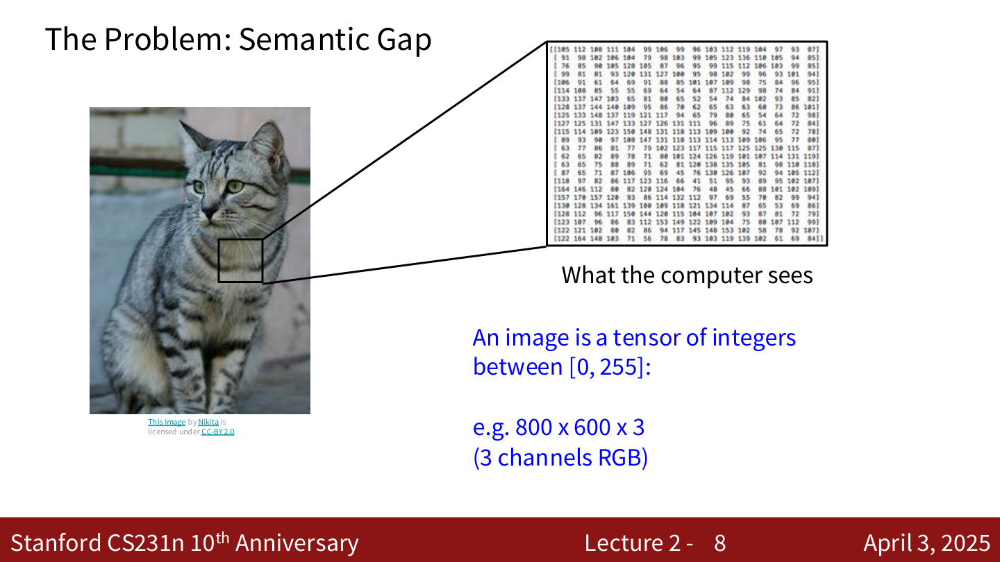
图像分类面临的挑战¶
- 视角变化 (Viewpoint Variation)：摄像机移动时，所有像素值都会改变
- 光照变化 (Illumination)：不同光照条件下，同一物体的像素值差异巨大
- 背景干扰 (Background Clutter)：物体与背景融为一体
- 遮挡 (Occlusion)：物体只有一部分可见
- 形变 (Deformation)：同一类物体可以有各种姿态
- 类内差异 (Intraclass Variation)：同一类别的个体在外观上可能差异很大
- 上下文依赖 (Context)：需要借助上下文才能正确识别
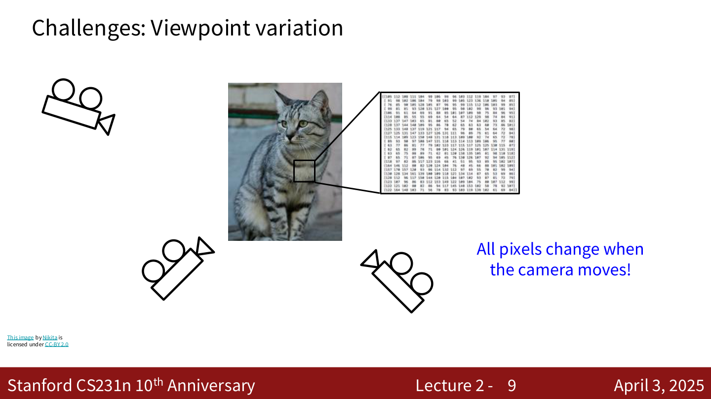
为什么不能硬编码？¶
不像排序算法那样有明确的步骤，识别一只猫并没有显而易见的硬编码方法。早期尝试过 "找边缘 → 找角点 → ？" 的流程（如 Canny 边缘检测），但效果不佳。
数据驱动方法 (Data-Driven Approach)¶
机器学习的方法分三步：
- 收集一个包含图像和标签的数据集
- 使用机器学习算法训练一个分类器
- 在新图像上评估分类器
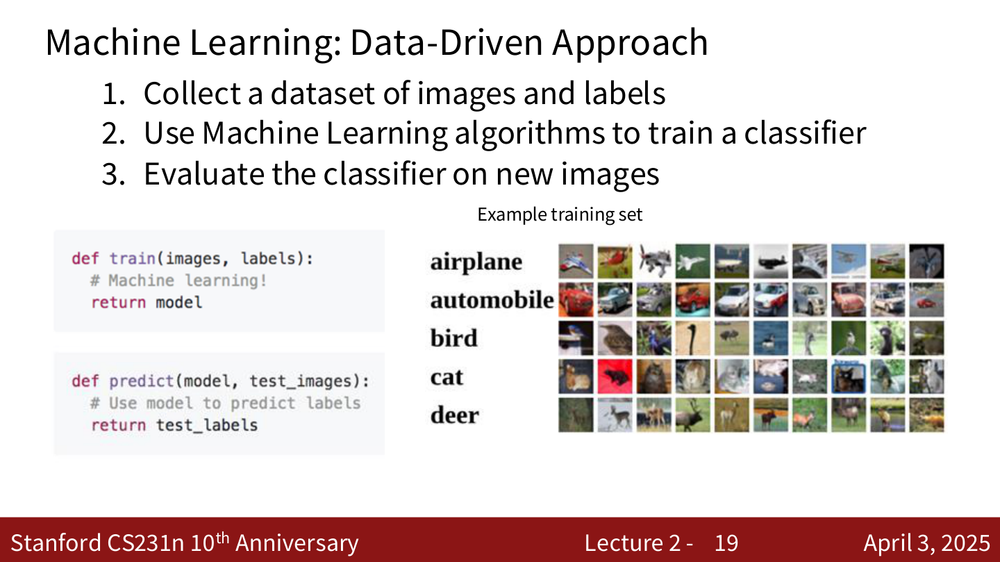
def train(images, labels):
# Machine learning!
return model
def predict(model, test_images):
# Use model to predict labels
return test_labels
最近邻分类器 (Nearest Neighbor Classifier)¶
基本思想¶
- 训练阶段：记住所有训练数据和标签
- 预测阶段：对于每张测试图像，找到与之最相似的训练图像，用该训练图像的标签作为预测结果
距离度量 (Distance Metric)¶
需要一个距离函数来衡量两张图像的相似度。
L1 距离 (Manhattan Distance)：
逐像素取绝对值差，然后求和。
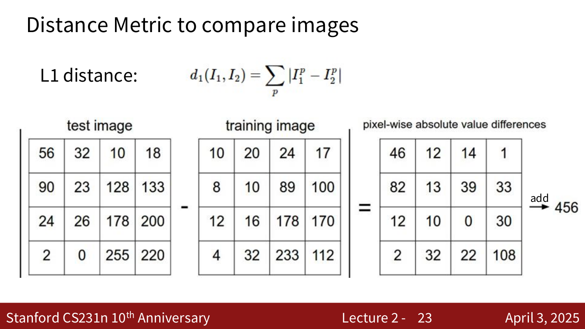
代码实现¶
import numpy as np
class NearestNeighbor:
def __init__(self):
pass
def train(self, X, y):
# X is N x D, Y is 1-dimension of size N
self.Xtr = X
self.ytr = y
def predict(self, X):
num_test = X.shape[0]
Ypred = np.zeros(num_test, dtype=self.ytr.dtype)
for i in range(num_test):
distances = np.sum(np.abs(self.Xtr - X[i, :]), axis=1)
min_index = np.argmin(distances)
Ypred[i] = self.ytr[min_index]
return Ypred
时间复杂度¶
- 训练：\(O(1)\)，仅存储数据
- 预测：\(O(N)\)，需要遍历所有训练数据
这很糟糕！我们希望分类器在预测时快速，训练时慢是可以接受的。（存在 fast / approximate nearest neighbor 方法，如 Facebook 的 FAISS 库。）
K-最近邻 (K-Nearest Neighbors, KNN)¶
基本思想¶
不再只看最近的一个邻居，而是找到 K 个 最近的训练样本，通过 多数投票 来决定预测标签。
- \(K = 1\)：决策边界不规则，容易受噪声影响
- \(K = 3\)：边界更平滑
- \(K = 5\)：边界进一步平滑
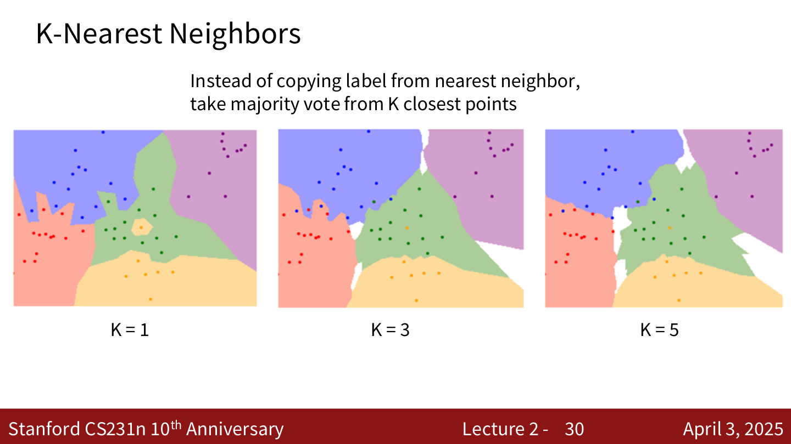
距离度量对比¶
L1 距离 (Manhattan Distance)：
沿网格线移动的距离（类似在城市街区中行走），等距线呈菱形。
L2 距离 (Euclidean Distance)：
直线距离，等距线呈圆形。
示例：设原点 \(O(0,0)\)，点 \(A(1, 0)\)
- L1 距离下，\(B(0.5, 0.5)\) 与 \(O\) 的距离 = \(|0.5| + |0.5| = 1 = d_1(O, A)\)
- L2 距离下，\(B(1/\sqrt{2}, 1/\sqrt{2})\) 与 \(O\) 的距离 = \(\sqrt{1/2 + 1/2} = 1 = d_2(O, A)\)
L1 和 L2 的决策边界形状不同：L1 的边界倾向于沿坐标轴对齐，L2 的边界更自然。
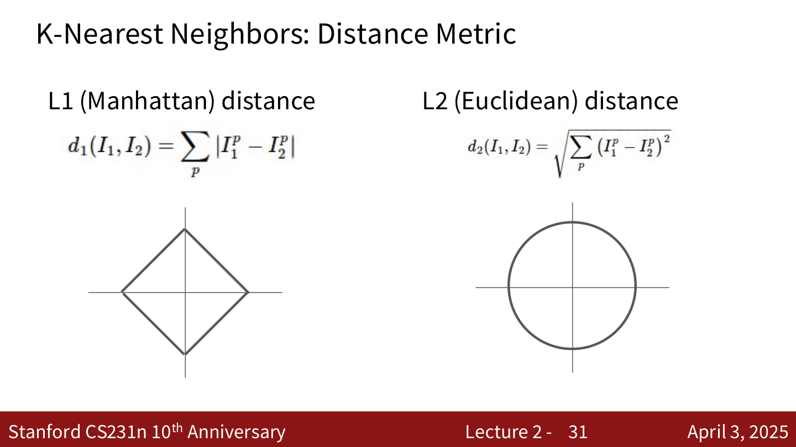
超参数 (Hyperparameters)¶
KNN 中有两个超参数需要选择：
- K 值：使用多少个最近邻
- 距离度量：L1 还是 L2
这些是关于算法本身的选择，非常依赖于具体的问题和数据集，必须通过实验来确定最佳值。
如何设置超参数¶
Idea #1：选择在训练数据上表现最好的超参数
- 不可取！\(K = 1\) 在训练数据上总是完美的
Idea #2：选择在测试数据上表现最好的超参数
- 不可取！这样无法知道算法在新数据上的表现（永远不要这样做！）
Idea #3：将数据分为 训练集、验证集、测试集
- 在训练集上训练
- 在验证集上调超参数
- 最后在测试集上评估一次
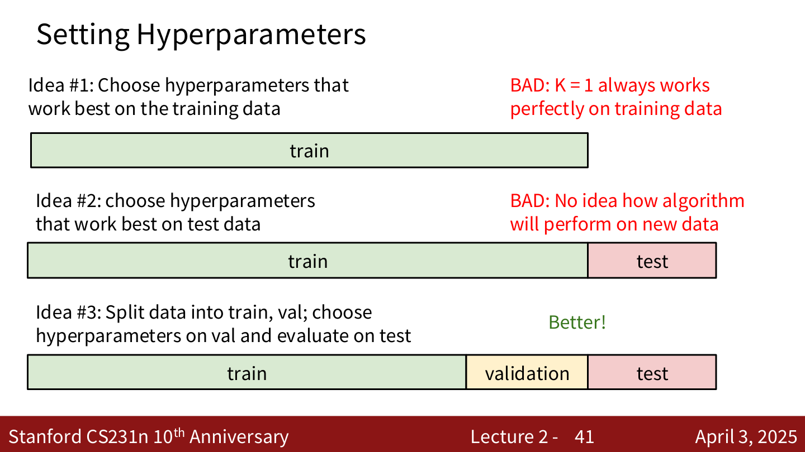
Idea #4：交叉验证 (Cross-Validation)
- 将训练数据分成多个 fold（如 5 折）
- 轮流用每个 fold 作为验证集，其余作为训练集
- 取平均结果选择最佳超参数
- 适用于小数据集，在深度学习中不太常用
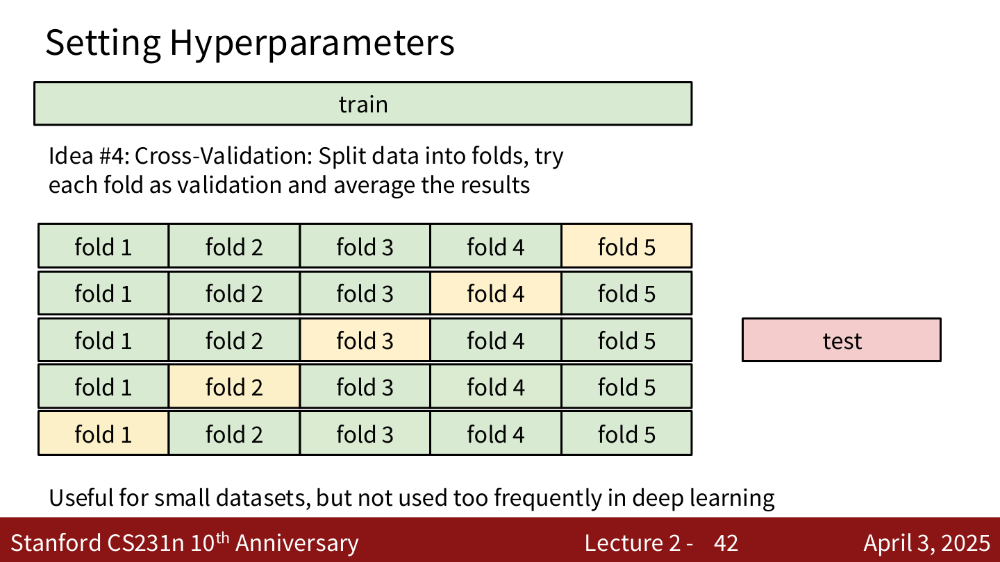
KNN 的局限性¶
在图像上使用像素距离的 KNN 几乎不会被实际使用，因为像素级距离度量不具备语义信息。例如，将一张人脸图像进行遮挡、平移 1 个像素、或改变色调，这三种变换后的图像与原图的像素距离可能完全相同，但语义差异巨大。
KNN 总结¶
- 图像分类：给定训练集的图像和标签，预测测试集的标签
- KNN 基于 K 个最近训练样本的标签来预测
- 距离度量 和 K 是超参数
- 使用验证集选择超参数
- 测试集只在最后运行一次
线性分类器 (Linear Classifier)¶
参数化方法 (Parametric Approach)¶
与 KNN 不同，参数化方法将训练数据的知识 压缩 到参数 \(W\) 中：
- \(x\)：输入图像，展平为列向量（如 \(32 \times 32 \times 3 = 3072\) 维）
- \(W\)：权重矩阵（\(C \times D\)，其中 \(C\) 为类别数，\(D\) 为输入维度）
- \(b\)：偏置向量（\(C \times 1\)）
- 输出：\(C\) 个类别的得分
对于 CIFAR-10（10 类，\(32 \times 32 \times 3\) 图像）：
其中 \(f\) 为 \(10 \times 1\)，\(W\) 为 \(10 \times 3072\)，\(x\) 为 \(3072 \times 1\)，\(b\) 为 \(10 \times 1\)。
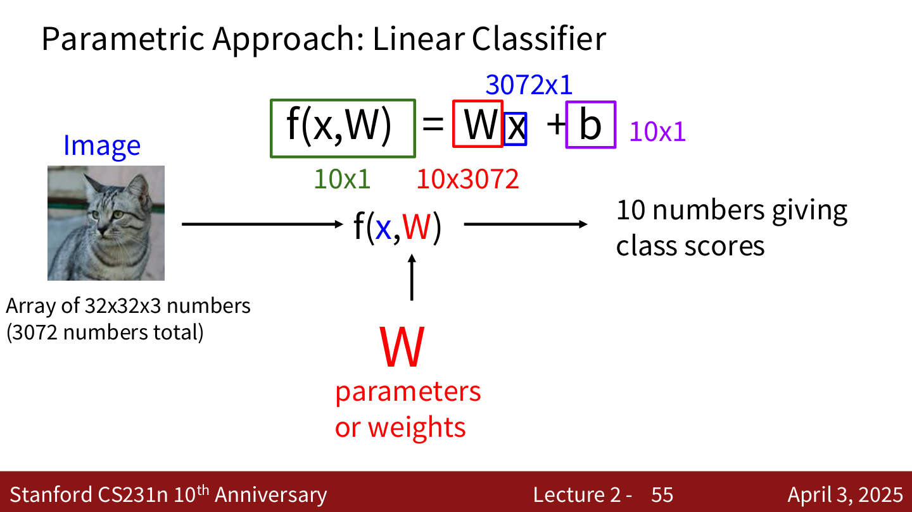
线性分类器是神经网络的基本构件——深度网络中的每个 "全连接层" 本质上就是一个线性变换。
代数视角的例子¶
假设图像只有 4 个像素，3 个类别（cat / dog / ship）：
将图像展平为向量 \(x = [56, 231, 24, 2]^T\)，给定权重矩阵 \(W\) 和偏置 \(b\)：
得分分别为 Cat: \(-96.8\), Dog: \(437.9\), Ship: \(61.95\)。
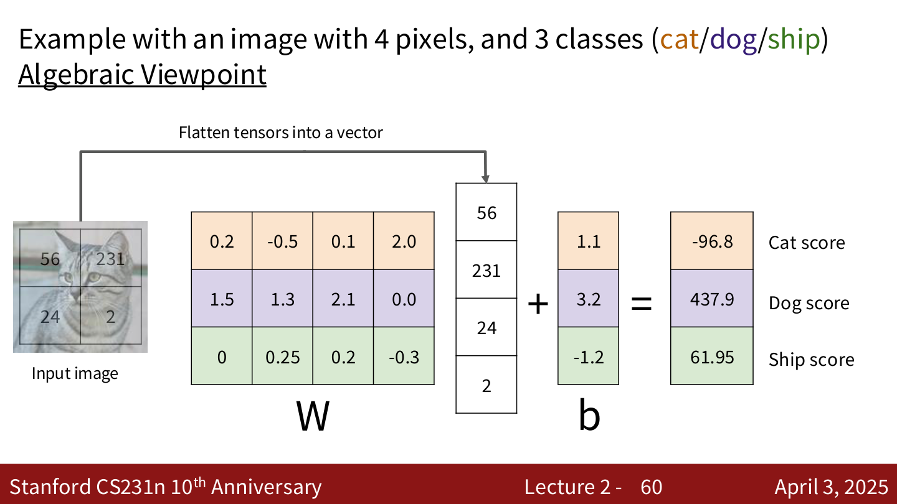
解读线性分类器¶
视觉视角：\(W\) 的每一行可以被 reshape 回图像大小，可视化后代表该类别的"模板"。分类时，线性分类器实际上在计算输入图像与每个模板的点积（相似度）。
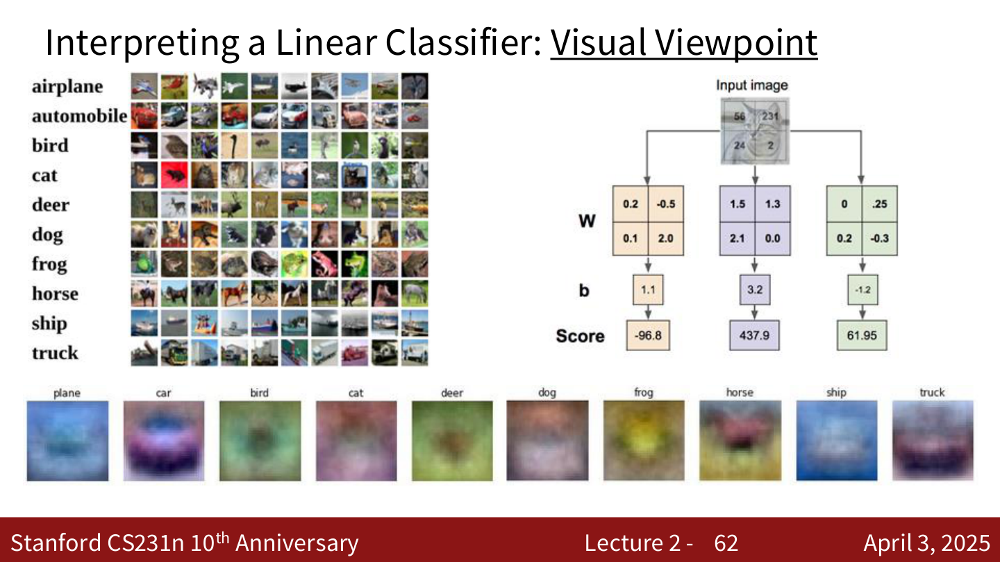
几何视角：每个类别的分类器定义了高维像素空间中的一个 超平面。\(W\) 的每一行是对应超平面的法向量，\(b\) 决定超平面的偏移。空间被这些超平面划分为不同区域。
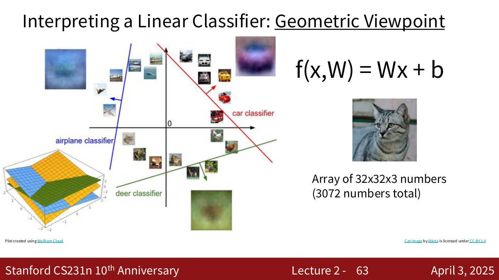
线性分类器的局限¶
线性分类器无法处理以下情况：
- XOR 问题：类别分布在第一、三象限 vs 第二、四象限
- 环形分布：一个类别在另一个类别的包围中
- 多模态分布：同一类别有多个不连通的区域
这些情况无法用单个线性决策边界分开。
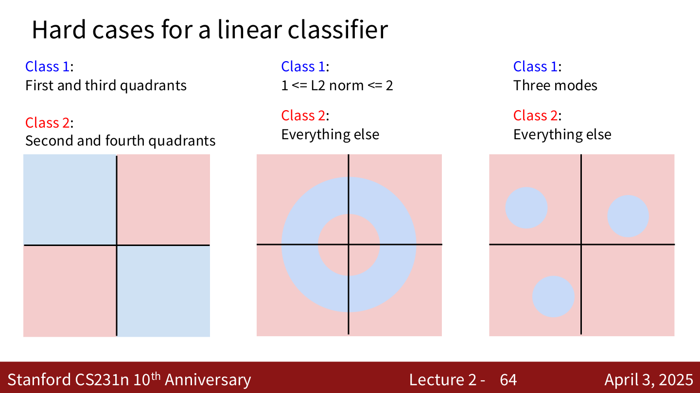
损失函数 (Loss Function)¶
基本框架¶
给定数据集 \(\{(x_i, y_i)\}_{i=1}^N\)，其中 \(x_i\) 是图像，\(y_i\) 是整数标签。
损失函数衡量当前分类器的好坏：
目标是找到使损失最小的权重 \(W\)。
Softmax 分类器 (Cross-Entropy Loss)¶
核心思想¶
将原始得分解释为 概率。
步骤：
- 计算原始得分（logits）：\(s = f(x_i; W)\)
- 通过 Softmax 函数转换为概率：
- 最大化正确类别的概率，等价于最小化交叉熵损失：
计算示例¶
对于一张猫的图像，得分为 cat: \(3.2\), car: \(5.1\), frog: \(-1.7\)：
- 取指数 (unnormalized probabilities)：\(e^{3.2} = 24.5\)，\(e^{5.1} = 164.0\)，\(e^{-1.7} = 0.18\)
- 归一化 (probabilities)：\(24.5 / 188.68 = 0.13\)，\(164.0 / 188.68 = 0.87\)，\(0.18 / 188.68 = 0.00\)
- 损失：\(L_i = -\log(0.13) = 2.04\)
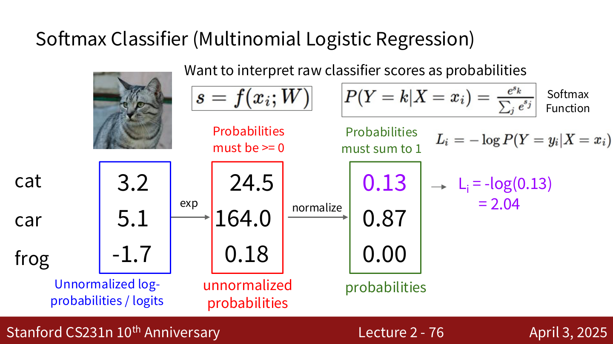
关键性质¶
- 最小值：\(L_i = 0\)（当正确类别概率为 1 时），理论上不可达到，只能趋近
- 最大值：\(L_i = +\infty\)（当正确类别概率趋近 0 时）
- 初始化时的损失：所有得分近似相等时，\(P \approx 1/C\)，所以 \(L_i \approx -\log(1/C) = \log C\)。对于 CIFAR-10（\(C = 10\)），初始损失约为 \(\log(10) \approx 2.3\)。这是一个很好的 sanity check。
概率解释¶
Softmax 损失等价于 最大似然估计 (Maximum Likelihood Estimation)：选择权重来最大化观测数据的似然。
也可以理解为最小化预测概率分布与真实分布（one-hot 向量）之间的 交叉熵 (Cross Entropy) 或 KL 散度 (Kullback-Leibler Divergence)。
SVM 损失 (Hinge Loss) — 阅读作业¶
Multiclass SVM Loss¶
其中 \(s = f(x_i, W)\) 是得分向量。
含义：对于每个不正确的类别 \(j\)，如果正确类别的得分 \(s_{y_i}\) 没有比 \(s_j\) 高出至少 1（margin），就会产生损失。
计算示例¶
假设 3 个训练样本，3 个类别，得分如下：
| cat (图1) | car (图2) | frog (图3) | |
|---|---|---|---|
| cat | 3.2 | 1.3 | 2.2 |
| car | 5.1 | 4.9 | 2.5 |
| frog | -1.7 | 2.0 | -3.1 |
图1 (cat)：\(L_1 = \max(0, 5.1 - 3.2 + 1) + \max(0, -1.7 - 3.2 + 1) = 2.9 + 0 = 2.9\)
图2 (car)：\(L_2 = \max(0, 1.3 - 4.9 + 1) + \max(0, 2.0 - 4.9 + 1) = 0 + 0 = 0\)
图3 (frog)：\(L_3 = \max(0, 2.2 - (-3.1) + 1) + \max(0, 2.5 - (-3.1) + 1) = 6.3 + 6.6 = 12.9\)
总损失：\(L = (2.9 + 0 + 12.9) / 3 = 5.27\)
Hinge Loss 的形状¶
损失关于得分差 \(s_{y_i} - s_j\) 的图像是一个"铰链"形状：当正确类别得分足够高时损失为 0，否则线性增长。
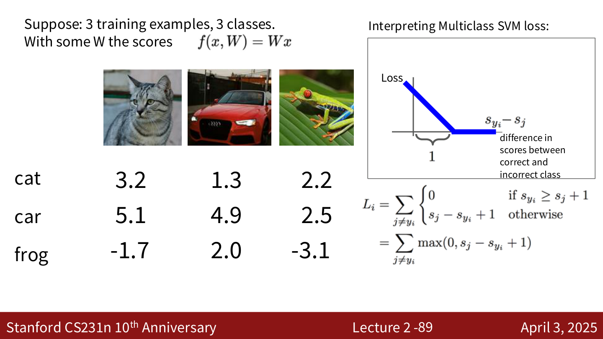
关键问题¶
- Q: 如果 car 的分数降低 0.5？ 损失不变（因为 car 已经远高于 margin）
- Q: 最小 / 最大损失？ 最小为 0，最大为 \(+\infty\)
- Q: 初始化时所有 \(s \approx 0\)，损失是多少？ \(L_i = C - 1\)（\(C\) 为类别数），可以用来做 sanity check
- Q: 如果 sum 包含 \(j = y_i\)？ 损失会增加 1（加一个常数，不影响最优 \(W\)）
- Q: 如果用 mean 代替 sum？ 只是缩放损失，不影响最优 \(W\)
- Q: 如果用 \(\max(0, s_j - s_{y_i} + 1)^2\)？ 这是 squared hinge loss，不同的损失函数，会得到不同的 \(W\)
SVM Loss 代码¶
def L_i_vectorized(x, y, W):
scores = W.dot(x)
margins = np.maximum(0, scores - scores[y] + 1)
margins[y] = 0
loss_i = np.sum(margins)
return loss_i
Softmax vs. SVM¶
| 特性 | Softmax (Cross-Entropy) | SVM (Hinge Loss) |
|---|---|---|
| 输出 | 概率分布 | 原始得分 |
| 损失 | \(-\log(e^{s_{y_i}} / \sum_j e^{s_j})\) | \(\sum_{j \neq y_i} \max(0, s_j - s_{y_i} + 1)\) |
| 对得分变化的敏感度 | 即使正确类别已经领先，仍然会试图让得分差距更大 | 一旦正确类别的得分超过其他类别 margin 以上，损失就不再变化 |
示例：假设 \(y_i = 0\)，分别考虑以下得分：
- \([10, -2, 3]\)：SVM loss = 0, Softmax loss > 0
- \([10, 9, 9]\)：SVM loss = 0, Softmax loss 较大
- \([10, -100, -100]\)：SVM loss = 0, Softmax loss 接近 0
如果将正确类别得分从 10 提高到 20：SVM loss 不变（已经是 0），Softmax loss 会进一步减小。
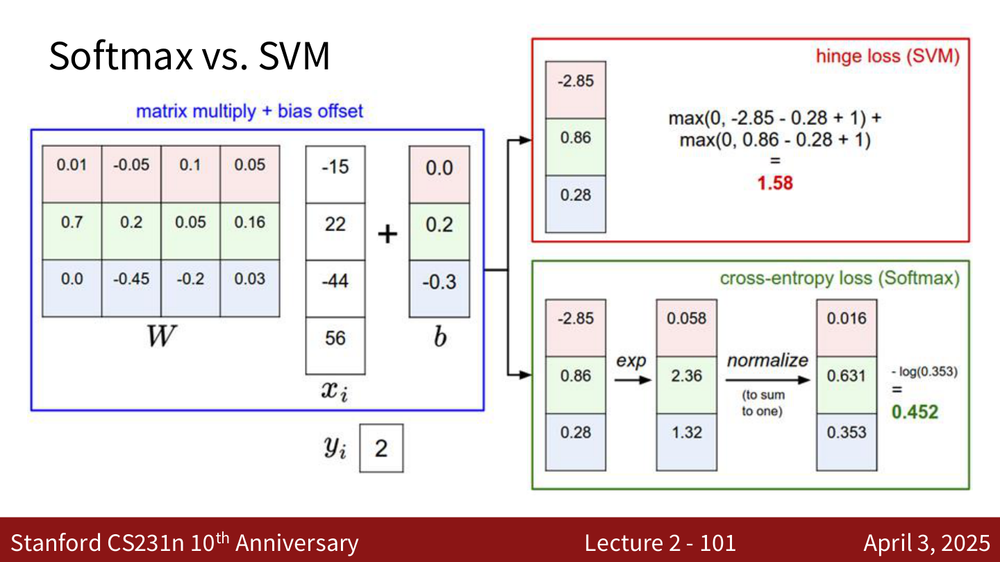
接下来的内容¶
- 正则化 (Regularization)：防止过拟合
- 优化 (Optimization)：如何找到最优的 \(W\)